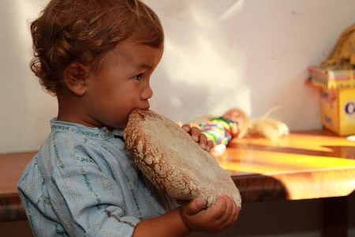
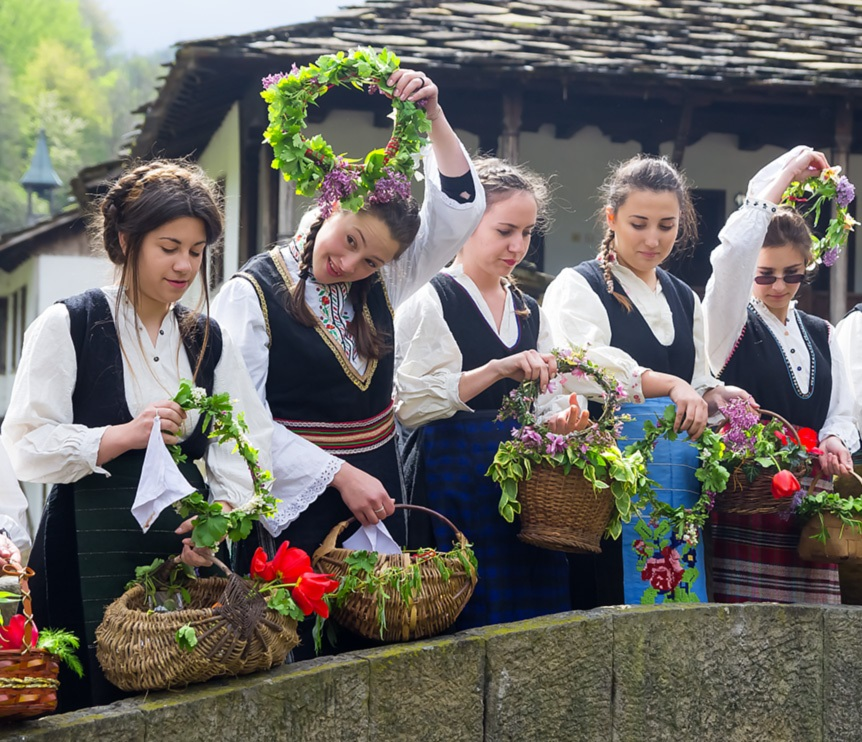
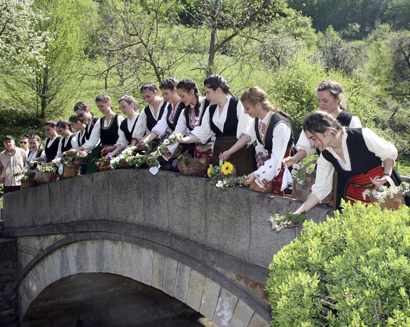
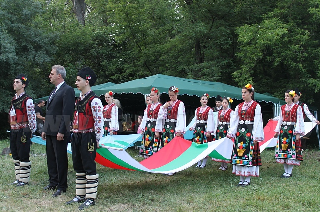

Айтос-Традиции и обичаи
Фестивал на хляба
| „Хляб, замесен с усмивка“. В основата на организирането му стои бургаското сдружение „Усмивка“, а негов партньор в тази инициатива e Община Айтос. Състои се в края на март. Регионалният фестивал на хляба се създава с идеята да популяризира българските народни традиции и обичаи сред младото поколение в Бургаска област, да насърчи у хората желанието за комуникация и социализиране, за споделяне и взаимопомощ по време на приготвянето на хляб. По време на феста всеки ще може да сподели тръпката от това сами да си замесим хляб. В програмата на фестивала ще вземат участие деца и младежи от айтоските училища. По време на феста всеки ще може да сподели тръпката от това сами да си замесим хляб. Едновременно с това посетителите ще могат да се включат в различните ателиета и работилнички. |  |
Цветница
| Цветница е един от обичаните и пъстри пролетни празници. Той също е подвижен и се празнува винаги в неделята след Лазаровден. Отбелязва се в православната, католическата и протестантската църква. Нарича се още Връбница, Цветна неделя, Куклинден или Палмова неделя. На Цветница неомъжените момичета се събират, завързват пръстените си с червени конци и ги потапят в съд с “мълчана вода”. Пускайки венците във водата, момите пеят и се надяват венците им да бъдат уловени от момъка, когото те харесват. Макар да е период на пости, църквата разрешава в този ден на трапезата да се сложи риба. |  |
|  | Домакинята трябва със завързани очи да ги извади като същевременно нарича кой ще е бъдещият жених, на девойката, чийто пръстен е изваден. На този ден празнуват всички носещи име на цветя и произлизащи от названия на растения. Цветница има запазено място и в народния обреден календар - на този ден се изпълнява последният лазарски обичай - кумиченето. Преди обед всички лазарки се отправят към реката, като всяка носи със себе си китка цветя, върбово венче или малко хлебче, наричано кукла. |
Фолклорен фестивал "Славееви нощи"
| Организатори на фолклорните празници "Славееви нощи" са община Айтос и читалище "Васил Левски". Празниците се провеждат през месец юни на откритата сцена в парк "Славеева река"- град Айтос. Фолклорните празници се провеждат в рамките на три дни и се наблюдават три възрастови групи. Интересът към празниците нараства с всяка изминала година, а броят на участниците непрекъснато расте. В рамките на празниците се провеждат Конкурс за изпълнители на насродни песни, Конкурс за инструменталист-гайда, кавал, гъдулка и тамбура, Конкурс за певческа група за обработен фолклор, Конкурс за инструментална група за обработен фолклор и Конкурс за танцова група. |  |